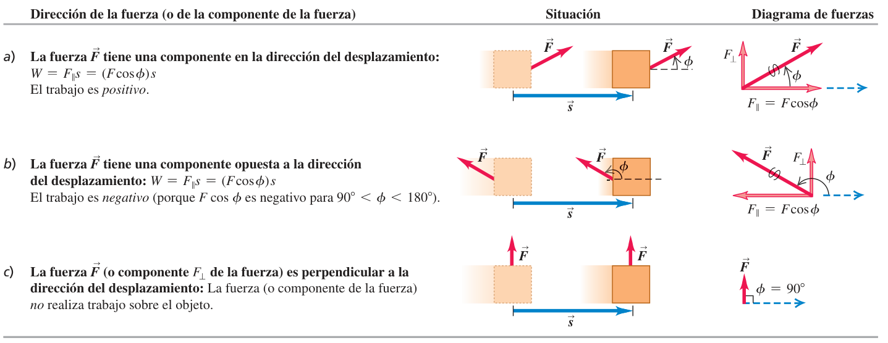
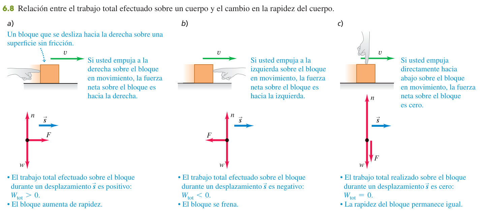

Trabajo y energía cinética
Un método nuevo para resolver problemas de movimiento sin pasar por el tiempo ni por la aceleración: calcular el trabajo de cada fuerza y compararlo con el cambio de la energía cinética. Sirve cuando la fuerza varía (resortes), cuando la trayectoria es curva y, en general, cuando el enunciado habla de distancias y rapideces, no de tiempos.
El tema en 5 minutos P
Una sola idea: el trabajo total que hacen las fuerzas sobre un cuerpo es lo que cambia su energía cinética, $W_{tot}=K_2-K_1$. Es un atajo frente a Newton: relaciona la rapidez en dos puntos sin pasar por el tiempo ni por la aceleración. Úsalo cuando el enunciado hable de distancias y rapideces, cuando la fuerza varíe (resortes) o cuando la trayectoria sea curva.
Necesitas: el producto escalar $\vec A\cdot\vec B=AB\cos\phi=A_xB_x+A_yB_y$ (T1), $v^2=v_0^2+2a\Delta x$ (T2), el diagrama de cuerpo libre, la normal en una rampa y $f_k=\mu_kn$ (T4-T5). U y el solucionario usan $g=9{,}80\ \text{m/s}^2$; los exámenes de 2022-2025 dan $9{,}81$ (si el enunciado no la da, cualquiera de las dos vale).
El método en 5 pasos (úsalo siempre, en este orden)
Es la «Estrategia para resolver problemas 6.1» del libro. U p.179
Las 6 fórmulas que hay que saber
| Fórmula | Cuándo se usa |
|---|---|
| $W=Fs\cos\phi=\vec F\cdot\vec s$ | Fuerza constante y camino recto. $\phi$ = ángulo entre la fuerza y el desplazamiento. |
| $K=\tfrac12mv^2$ | Siempre que aparezca una rapidez. Nunca es negativa. |
| $W_{tot}=K_2-K_1$ | El corazón del tema: da rapideces, distancias de frenado, fuerzas medias. |
| $W=\int F_x\,dx$ (área bajo $F$–$x$) | La fuerza cambia con la posición (te dan $F(x)$ o una gráfica). |
| $F=kx$, $\;W=\tfrac12kx_2^2-\tfrac12kx_1^2$ | Hay un resorte. Ese es el trabajo sobre el resorte; el resorte hace el contrario. |
| $P=\dfrac{dW}{dt}=\vec F\cdot\vec v$ | Piden potencia, «hp», «cuánto puede subir un motor». |
Qué cae en examen
Hay 11 preguntas de examen real que se resuelven con este tema: una teoría completa («Energía cinética y el teorema trabajo-energía», X1), cinco problemas de 3 puntos (bala y satélite que se frenan en una distancia, X5-X6; bloque contra una pared, X7; poleas, X8; cuarto de círculo con fricción, X11) y cinco cuestiones cortas (rapidez en un MCU, trabajo en una órbita, trabajo entre dos playas, agua bombeada, resorte cortado: X2-X4, X9, X10). Los problemas de «resorte + rampa + fricción» usan además la energía potencial: están en el tema 7. X ×11
Elige tu ruta
Esta página + lo marcado 🔴 imprescindible + ejercicios del bloque «Núcleo».
Todo lo anterior + 🟡 conveniente + ejercicios del bloque «Práctica» + la pregunta de teoría.
Chuleta, errores frecuentes, lista de comprobación y los 11 de examen sin mirar la solución.
¿?¿Qué tipo de problema es? 🔴 P
Lee el enunciado, busca la pista en la primera columna y ve directo al método y al ejercicio modelo.
| Si el enunciado dice… | Haz esto | Ejercicio modelo |
|---|---|---|
| «parte del reposo», «tras recorrer $d$», ¿qué rapidez? | Trabajo de cada fuerza ($Fs\cos\phi$), súmalos y $v_2=\sqrt{v_1^2+2W_{tot}/m}$. | X7 |
| Dos cuerpos unidos por cuerda o polea | Teorema para todo el sistema: la tensión se cancela; usa la ligadura de velocidades. | X8 |
| «penetra», «se detiene en $d$», «fuerza media», «se estrella» | $F\,d=K_1$ (más $mgd$ si el movimiento es vertical). El tiempo, aparte: $t=2d/v_1$. | X5, X6 |
| Trayectoria curva (arco, rampa curva) con fricción desconocida | $W_{peso}=mg\cdot$(altura bajada); el trabajo desconocido sale por diferencia: $W=\Delta K-\sum W_{conocidos}$. | X11 |
| Gráfica $F$–$x$ o fuerza $F(x)$ | Trabajo = área con signo (o $\int F\,dx$); después el teorema. | E6 |
| Resorte: «compresión máxima», «constante $k$» | $F=kx$ y $\tfrac12kx^2$; cuidado con el signo del trabajo del resorte. | E5, X10 |
| «¿Por qué no cambia la rapidez?», órbitas, «trabajo en una vuelta», «entre dos puntos a la misma altura» | Fuerza ⟂ velocidad ⇒ $W=0$; vuelta completa ⇒ $W_{tot}=\Delta K=0$; el peso solo mira alturas. | X2, X3, X4 |
| «Subir», «bombear», «potencia», «hp», «cuántos pasajeros» | A rapidez constante: $W=mgh$ y $P=Fv=mgv$. | X9, E8 |
| «Desarrolle el tema…» | Guion: trabajo → $K$ → deducción → teorema → generalización → ejemplo. | X1 |
1Trabajo de una fuerza 🔴 U p.173
🎯 Antes de leer: empujas con todas tus fuerzas una pared que no se mueve. ¿Has hecho trabajo sobre ella? ¿Y si llevas una maleta a velocidad constante por un pasillo horizontal? (Piénsalo 20 s; la respuesta está en esta sección.)
Una fuerza hace trabajo sobre un cuerpo solo si el cuerpo se desplaza y la fuerza tiene componente a lo largo de ese desplazamiento. Sostener una pesa quieta cansa, pero no es trabajo. Fuerza constante y camino recto:
$$W=Fs\cos\phi=\vec F\cdot\vec s\qquad\text{(ecs. 6.2 y 6.3)}$$$\phi$ es el ángulo entre $\vec F$ y el desplazamiento $\vec s$; solo trabaja $F\cos\phi$. Es un escalar y se mide en joules, $1\ \text{J}=1\ \text{N}\cdot\text{m}$. Imagen útil: el trabajo es una transferencia de energía; a favor del movimiento la mete, en contra la saca, de lado no hace nada.
Ejemplo mínimo (ej. 6.1). Empujas un coche 18 m con 210 N a $30^\circ$ del desplazamiento: $W=(210)(18)\cos30^\circ=3{,}3\times10^3$ J. Si te dan vectores, usa componentes: $\vec F=(160,\,-40)$ N y $\vec s=(14,\,11)$ m dan $W=F_xs_x+F_ys_y=2240-440=1{,}8\times10^3$ J.
U p.173-174
| Ángulo $\phi$ (fuerza–desplazamiento) | $\cos\phi$ | Trabajo | Ejemplo |
|---|---|---|---|
| $0\le\phi\lt90^\circ$ | $\gt0$ | $W\gt0$ (ingresa energía) | tu empujón sobre el coche; el peso al bajar |
| $\phi=90^\circ$ | $0$ | $W=0$ | la normal sobre un cuerpo que desliza; la tensión en un MCU; el peso en un camino horizontal |
| $90^\circ\lt\phi\le180^\circ$ | $\lt0$ | $W\lt0$ (retira energía) | la fricción cinética; el peso al subir |
Sin desplazamiento (pesa quieta) o con la fuerza perpendicular al desplazamiento (normal, tensión en un MCU, peso en un suelo horizontal) el trabajo es cero. Y no confundas la W mayúscula (trabajo) con la w minúscula (peso).
Di siempre qué fuerza hace el trabajo y sobre qué cuerpo: al bajar una barra, la barra hace trabajo positivo sobre las manos y las manos hacen trabajo negativo sobre la barra (igual y opuesto, porque las dos se desplazan lo mismo).
U p.173-176Varias fuerzas: trabajo total 🔴
Como el trabajo es un escalar, el total sobre un cuerpo es la suma algebraica de los trabajos de cada fuerza, o bien el trabajo de la fuerza neta:
$$W_{tot}=W_1+W_2+\dots=\Bigl(\sum\vec F\Bigr)\cdot\vec s$$Ejemplo mínimo (ej. 6.2). Un tractor arrastra 20 m un remolque tirando con 5000 N a $36{,}9^\circ$; la fricción es de 3500 N. Peso y normal: $0$. Tractor: $(5000)(20)\cos36{,}9^\circ=80$ kJ. Fricción: $-(3500)(20)=-70$ kJ. Total: $10$ kJ. Por la fuerza neta: $(5000\cos36{,}9^\circ-3500)(20)=(500)(20)=10$ kJ ✓.
U p.176-177✍️ Comprueba que lo has entendido (2 min)
- Arrastras una maleta 10 m por un suelo horizontal tirando del asa con 50 N a $60^\circ$ de la horizontal. ¿Qué trabajo haces?
Ver respuesta
$W=Fs\cos\phi=(50)(10)\cos60^\circ=250$ J. Solo trabaja la componente horizontal (25 N). - Un bloque desliza 3 m mientras la fricción (6 N) lo frena. ¿Trabajo de la fricción, de la normal y del peso?
Ver respuesta
$W_f=-(6)(3)=-18$ J ($\phi=180^\circ$); $W_n=W_w=0$ (perpendiculares al desplazamiento). - Subes una caja de 2 kg una altura de 1,5 m a velocidad constante. ¿Trabajo de tu mano, del peso y total? ($g=9{,}8$)
Ver respuesta
Mano: $+mgh=+29{,}4$ J. Peso: $-29{,}4$ J. Total: $0$ (la rapidez no cambia; lo verás en la sección 2).
2Energía cinética y teorema trabajo-energía 🔴 U p.177
🎯 Antes de leer: un coche duplica su rapidez. ¿Por cuánto se multiplica su energía cinética y, por tanto, el trabajo que hizo falta? (Piénsalo 20 s; la respuesta está en esta sección.)
Es la energía del movimiento: un escalar que depende de la masa y de la rapidez (no de la dirección), nunca es negativa y vale cero solo en reposo. Unidad: J. Duplicar la masa duplica $K$; duplicar la rapidez la cuadruplica.
Qué significa: $K$ es el trabajo total necesario para acelerar el cuerpo desde el reposo hasta $v$, y también el que puede hacer mientras se detiene. Por eso recoges la mano al atrapar una pelota: más distancia, menos fuerza para el mismo trabajo.
U p.178, 181El trabajo total de todas las fuerzas sobre una partícula es igual al cambio de su energía cinética:
$$\boxed{W_{tot}=K_2-K_1=\Delta K}\qquad\text{(ec. 6.6)}$$$W_{tot}\gt0$: acelera; $W_{tot}\lt0$: frena; $W_{tot}=0$: rapidez constante. Deducción (fuerza neta constante): $F=ma_x$ y $v_2^2=v_1^2+2a_xs$; multiplicando por $m/2$ sale $Fs=\tfrac12mv_2^2-\tfrac12mv_1^2$ (6.4).
Ejemplo mínimo (ej. 6.3). El remolque anterior ($m=1500$ kg) iba a $2{,}0$ m/s: $K_2=K_1+W_{tot}=3000+10\,000=13\,000$ J, luego $v_2=\sqrt{2(13\,000)/1500}=4{,}2$ m/s. Sin calcular la aceleración.
U p.178-180
El teorema no contiene el tiempo ni la aceleración: une directamente el punto 1 con el 2. Úsalo si te dan o piden distancias y rapideces, si la fuerza varía o si el camino es curvo. Si te piden un tiempo, necesitas cinemática.
Límites: vale en un marco inercial y para cuerpos que se tratan como partículas (un patinador que se empuja de una pared gana $K$ sin que la pared haga trabajo: lo hacen sus fuerzas internas, cap. 8).
U p.179, 182- Escribir $W=K_1-K_2$: es «final menos inicial».
- Olvidar el ½ de $K$ o usar el peso $w$ en lugar de la masa $m$.
- Usar el trabajo de una fuerza en lugar del total.
- Obtener $K_2\lt0$: hay un signo mal o los puntos están cambiados.
✍️ Comprueba que lo has entendido (2 min)
- Un coche de 1000 kg pasa de 10 a 20 m/s. ¿Qué trabajo total han hecho las fuerzas sobre él?
Ver respuesta
$W_{tot}=\tfrac12(1000)(20^2-10^2)=1{,}5\times10^5$ J. Ojo: $K$ pasa de $5\times10^4$ a $2\times10^5$ J; doble rapidez, cuádruple $K$. - Dos veleros de hielo de masas $m$ y $2m$ parten del reposo empujados por la misma fuerza $F$ a lo largo de la misma distancia $s$. ¿Cuál llega con más energía cinética?
Ver respuesta
Los dos igual: $K=W_{tot}=Fs$. El ligero llega más rápido, pero con la misma $K$ (ejemplo conceptual 6.5 del libro). - Una bala de 20 g a 300 m/s se para tras penetrar 5,0 cm en un bloque de madera. ¿Fuerza media de la madera? (Desprecia el peso.)
Ver respuesta
$F\,d=K_1=\tfrac12(0{,}020)(300)^2=900$ J, luego $F=900/0{,}050=1{,}8\times10^4$ N. El mismo método que X5 y X6.
3Fuerza variable, resortes y caminos curvos 🔴 U p.183
🎯 Antes de leer: estiras un resorte 1 cm y luego otro centímetro más. ¿Cuesta lo mismo el segundo centímetro que el primero? (Piénsalo 20 s; la respuesta está en esta sección.)
Si la fuerza cambia con la posición, divide el recorrido en tramos tan cortos que en cada uno sea casi constante y suma los «fuerza × tramo». En el límite es una integral, y gráficamente el área bajo la curva:
$$W=\int_{x_1}^{x_2}F_x\,dx\qquad\text{(ec. 6.7)}$$El área bajo el eje cuenta negativa (si $x$ crece). Con $F_x$ constante vuelve a ser el rectángulo $F_x(x_2-x_1)$.
U p.183
El resorte: ley de Hooke y trabajo 🔴
Para estirar (o comprimir) un resorte ideal una distancia $x$ desde su longitud natural hay que aplicar $F_x=kx$ (ec. 6.8); $k$ es la constante de fuerza (N/m). El trabajo es el área del triángulo (fig. 6.19):
$$W=\tfrac12kX^2\ \text{(6.9)}\qquad W=\tfrac12kx_2^2-\tfrac12kx_1^2\ \text{(6.10)}$$Va con el cuadrado: deformar el doble cuesta el cuádruple. Vale igual al comprimir. Ejemplo mínimo (ej. 6.6): una mujer de 600 N comprime 1,0 cm una báscula: $k=600/0{,}010=6{,}0\times10^4$ N/m y $W=\tfrac12(6{,}0\times10^4)(0{,}010)^2=3{,}0$ J.
U p.184-185
La ec. (6.10) es el trabajo que tú haces sobre el resorte para cambiar su longitud. El trabajo que el resorte hace sobre el cuerpo unido a él es el negativo: $-\tfrac12kx_2^2+\tfrac12kx_1^2$. En el teorema trabajo-energía de ese cuerpo se usa este último. (Si el resorte parte relajado y se estira o comprime una cantidad $x$, el resorte frena al cuerpo: $W_{resorte}=-\tfrac12kx^2$; si el resorte se relaja empujando al cuerpo, $W_{resorte}=+\tfrac12kx^2$.)
U p.185
El teorema sigue valiendo (fuerza variable y camino curvo) 🔴
Con $a_x=v_x\,dv_x/dx$ (6.11) se llega a $W_{tot}=\tfrac12mv_2^2-\tfrac12mv_1^2$ (6.13) aunque la fuerza varíe. En un camino curvo el trabajo es $W=\int\vec F\cdot d\vec l$ (6.14) y el teorema vale igual. Solo la componente de la fuerza paralela a la trayectoria cambia la rapidez; la perpendicular solo la tuerce.
Consecuencia que cae (ej. 6.8, columpio): el trabajo del peso entre dos puntos solo depende de la altura: $W_{peso}=-mg(y_2-y_1)$, sea recto o curvo el camino. La tensión de las cadenas, siempre perpendicular al movimiento, no trabaja.
U p.186-189✍️ Comprueba que lo has entendido (2 min)
- Resorte de $k=200$ N/m. ¿Qué trabajo cuesta estirarlo de 0 a 10 cm? ¿Y de 10 a 20 cm?
Ver respuesta
$\tfrac12(200)(0{,}10)^2=1{,}0$ J; de 10 a 20 cm, $\tfrac12(200)(0{,}20^2-0{,}10^2)=3{,}0$ J: el segundo tramo cuesta el triple. - Un bloque de 0,5 kg a 2 m/s choca sin fricción con un resorte de $k=50$ N/m. ¿Compresión máxima?
Ver respuesta
$\tfrac12kX^2=\tfrac12mv^2\Rightarrow X=v\sqrt{m/k}=2\sqrt{0{,}5/50}=0{,}20$ m. - Una fuerza $F_x=3x^2$ (N, con $x$ en m) empuja un cuerpo de $x=0$ a $x=2$ m. ¿Trabajo?
Ver respuesta
$W=\int_0^2 3x^2\,dx=x^3\big|_0^2=8{,}0$ J. Ni $F(2)\cdot2=24$ J ni $F(0)\cdot2=0$.
4Potencia 🟡 U p.189
🎯 Antes de leer: dos motores suben la misma carga a la misma altura, uno en 10 s y otro en 20 s. ¿Qué es distinto: el trabajo o la potencia? (Piénsalo 20 s; la respuesta está en esta sección.)
Subir una caja cuesta el mismo trabajo en 1 s que en 5 s, pero en 1 s necesitas cinco veces más potencia:
$$P_{med}=\frac{\Delta W}{\Delta t}\ \text{(6.15)}\qquad P=\frac{dW}{dt}\ \text{(6.16)}$$Unidad: el watt, $1\ \text{W}=1\ \text{J/s}$; $1\ \text{hp}=746\ \text{W}$. El kilowatt-hora, $1\ \text{kW}\cdot\text{h}=3{,}6\times10^6\ \text{J}$, es una unidad de energía, no de potencia.
U p.189-190Si la fuerza es perpendicular a la velocidad, $P=0$. Ejemplos mínimos. Ej. 6.9: un motor de avión con $3{,}22\times10^5$ N de empuje a 250 m/s da $P=Fv=8{,}05\times10^7$ W; con el avión parado, $P=0$ aunque haya fuerza. Ej. 6.10: una corredora de 50,0 kg sube 443 m en 15,0 min: $W=mgh=2{,}17\times10^5$ J y $P_{med}=W/\Delta t=241$ W (o $mgv$ con $v=0{,}492$ m/s).
U p.190-191Confundir energía (J, kW·h: lo que cobra la compañía eléctrica) con potencia (W, kW, hp). Y para subir a rapidez constante la potencia es $mgv$: no depende de lo alto que vayas.
U p.190✍️ Comprueba que lo has entendido (2 min)
- Un motor sube 100 kg a rapidez constante de 0,5 m/s. ¿Qué potencia da? ($g=9{,}8$)
Ver respuesta
$P=Fv=mgv=(100)(9{,}8)(0{,}5)=490$ W. - Una bombilla de 60 W está encendida 5 h. ¿Cuánta energía consume, en kW·h y en J?
Ver respuesta
$0{,}060\ \text{kW}\times5\ \text{h}=0{,}30$ kW·h $=1{,}08\times10^6$ J. - Un coche avanza a 25 m/s venciendo una resistencia de 2,0 kN. ¿Potencia necesaria, en kW y en hp?
Ver respuesta
$P=Fv=(2000)(25)=50$ kW $=50\,000/746=67$ hp.
5Ejercicios resueltos
Las 11 preguntas de examen real (X1-X11) están todas aquí, completas: diez en el «Núcleo» y la teoría (X1) en su propio bloque. Las acompañan dos ejercicios del solucionario que cubren métodos que el examen no ha pedido todavía (gráfica $F$–$x$ y potencia) y uno de resorte. Ordenados por método, no por fuente. Intenta resolver tú antes de abrir la solución. Cada ejercicio termina con su receta.
| Ejercicio | Qué tipo es | Método que te llevas |
|---|---|---|
| E5 | Compresión máxima de un resorte | $\tfrac12kX^2=\tfrac12mv_0^2$ (el resorte frena: trabajo negativo) |
| E8 | Potencia de un ascensor | $P\,\Delta t=Mgh$ o $P=Mgv$; redondear «cuántos» hacia abajo |
| X11 · Sep 2023 | Arco con fricción + tramo recto | Tramo recto: $\mu_k=v^2/(2gs)$; arco: trabajo de la fricción por diferencia, peso con $mgR$ |
| X5 · Feb 2024 | Bala que se frena en una distancia | $(F-mg)\,d=K_1$: fuerza media sin aceleración; el tiempo aparte, $t=2d/v_1$ |
| E6 | Fuerza dada por una gráfica | Trabajo = área con signo; luego $v=\sqrt{2W/m}$ |
| X6 · Feb 2023 | Impacto vertical (satélite) | El mismo método que X5 con números grandes: no olvidar que el suelo también sostiene el peso |
| X7 · Feb 2023 | Parte del reposo, recorre $d$: ¿rapidez y trabajo? | Lista de fuerzas, $W_i=F_is\cos\phi_i$ con el ángulo respecto al desplazamiento, suma y $v=\sqrt{2W_{tot}/m}$ |
| X8 · Feb 2020 | Dos cuerpos con polea móvil | Teorema para todo el sistema: la tensión se cancela; ligadura $v_B=v_A/2$ en la $K$ |
| X10 · Feb 2025 | Resorte cortado por la mitad | Misma fuerza, mitad de deformación: $k'=2k$ |
| X2 · Sep 2022 | Cuestión: rapidez en un MCU | Fuerza ⟂ velocidad ⇒ $P=0$, $W=0$, $\Delta K=0$ |
| X3 · Feb 2023 | Cuestión: trabajo en una órbita | Vuelta completa con la misma rapidez ⇒ $W=\Delta K=0$; en la elipse no por tramos |
| X4 · Sep 2022 | Cuestión: trabajo entre dos puntos a la misma altura | El peso solo mira alturas: $W=-mg\Delta y=0$ |
| X9 · Sep 2022 | Cuestión: agua bombeada por ciclo | Levantar a rapidez constante: $W=mgh\Rightarrow m=W/(gh)$ |
E5 — Problema 6.79: compresión máxima de un resorte 🔴 E
Un bloque de 5,00 kg se mueve con $v_0=6{,}00$ m/s en una superficie horizontal sin fricción hacia un resorte de constante $k=500$ N/m unido a una pared. El resorte tiene masa despreciable. (a) Calcule la distancia máxima que se comprimirá el resorte. (b) Si dicha distancia no debe ser mayor que 0,150 m, ¿qué valor máximo debería tener $v_0$?
Inténtalo primero; abre una pista solo si te atascas.
Pista 1
Mientras comprime, solo trabaja el resorte y lo hace en contra: $W=-\tfrac12kX^2$.
Pista 2
En la compresión máxima el bloque se detiene ($K_2=0$): $\tfrac12kX^2=\tfrac12mv_0^2$.
Solución completa
- Trabajo del resorte al comprimir: $W_{res}=-\tfrac12kX^2$
- Teorema: $W_{tot}=K_2-K_1$, $K=\tfrac12mv^2$
- Planteamiento. Sin fricción, solo trabaja el resorte, que se opone al movimiento. En la compresión máxima el bloque se detiene: $K_2=0$. La fuerza del resorte varía con $x$: no sirve la cinemática de aceleración constante.
- (a) Teorema: $$-\tfrac12kX^2=0-\tfrac12mv_0^2\ \Rightarrow\ X=v_0\sqrt{\frac mk}=6{,}00\sqrt{\frac{5{,}00}{500}}=6{,}00(0{,}100)=\mathbf{0{,}600\ m}$$
- (b) Velocidad máxima para $X=0{,}150$ m: $$v_0=X\sqrt{\frac km}=0{,}150\sqrt{\frac{500}{5{,}00}}=0{,}150(10{,}0)=\mathbf{1{,}50\ m/s}$$
E8 — Problema 6.58: potencia de un ascensor (y 6.55, bicicleta) 🟡 E
6.58. Un elevador sin pasajeros tiene masa de 600 kg y está diseñado para subir con rapidez constante una distancia vertical de 20,0 m (5 pisos) en 16,0 s; es impulsado por un motor capaz de suministrar 40 hp al elevador. ¿Cuántos pasajeros como máximo pueden subir? Suponga una masa de 65,0 kg por pasajero.
Inténtalo primero; abre una pista solo si te atascas.
Pista 1
A rapidez constante la fuerza del motor iguala al peso total: $P=Mgv$ (o $P\,\Delta t=Mgh$).
Pista 2
Resta la masa de la cabina antes de dividir entre 65 kg y redondea hacia abajo el número de pasajeros.
Solución completa
- Potencia media: $P=W/\Delta t$; a rapidez constante, $W=M\,g\,h$
- Potencia instantánea: $P=F\,v$
- $1\ \text{hp}=746$ W
- Potencia disponible: $$P=40\times746=2{,}984\times10^4\ \text{W}$$
- Masa máxima (rapidez constante: el trabajo del motor en 16,0 s es $P\,\Delta t=Mgh$): $$M=\frac{P\,\Delta t}{g\,h}=\frac{(2{,}984\times10^4)(16{,}0)}{(9{,}80)(20{,}0)}=2436\ \text{kg}$$ Vía 2: $v=20{,}0/16{,}0=1{,}25$ m/s y $P=Mgv$ da la misma $M$.
- Pasajeros: $$\frac{2436-600}{65{,}0}=28{,}2\ \Rightarrow\ \mathbf{28\ pasajeros}$$ Se redondea hacia abajo: 29 superarían la potencia.
- Complemento 6.55 (tándem, 165 N a 9,00 m/s): $$P=F\,v=(165)(9{,}00)=1485\ \text{W}\ \Rightarrow\ \frac{1485}{2}=\mathbf{742{,}5\ W}\approx1{,}00\ \text{hp por ciclista}$$
Complemento 6.55. Un equipo de dos personas en una bicicleta tándem debe superar una fuerza de 165 N a 9,00 m/s: $P=Fv=(165)(9{,}00)=1485$ W en total; 742,5 W ≈ 1,00 hp por ciclista.
X11 — Cuarto de círculo con fricción: μk y trabajo de la fricción en el arco 🔴 examen real X
Una partícula de masa 0,5 kg que se encuentra en reposo se suelta desde una posición A, que forma un cuarto de círculo de radio $R=2{,}1$ m según se muestra en la figura, deslizándose hasta llegar al punto B con una velocidad de 5,2 m/s. A partir de este punto, la partícula se desplaza sobre una superficie horizontal hasta el punto C situado a 5 m, donde se detiene. Calcular (a) el coeficiente de fricción cinética de la superficie horizontal y (b) el trabajo de la fuerza de rozamiento sobre la partícula al deslizarse desde el punto A al B. (3 puntos.) (Convocatoria de Septiembre 2023; el enunciado no da $g$: se usa 9,81. Es una variante del problema 7.57 de U, p. 233.)
Inténtalo primero; abre una pista solo si te atascas.
Pista 1
Tramo BC (recto, fuerzas constantes): solo trabaja la fricción, $-\mu_kmg\,s$; aplica el teorema entre B y C.
Pista 2
Tramo AB (curvo): no intentes calcular la fricción; el teorema la da por diferencia: $W_{peso}+W_f=K_B$, con $W_{peso}=mgR$.
Solución completa
- Teorema trabajo-energía: $W_{tot}=K_2-K_1$, con $K=\tfrac12mv^2$
- Fricción cinética: $f_k=\mu_k\,n$ ($n=mg$ en el tramo horizontal)
- Trabajo del peso: $W=m\,g\,h$ ($h$ = descenso vertical)
- (a) Tramo BC (recto). Peso y normal son perpendiculares al desplazamiento ($W=0$); la fricción va en contra: $$n=mg,\qquad W_f=-\mu_k\,m\,g\,s$$
- Teorema entre B y C ($v_B=5{,}2$ m/s, $v_C=0$, $s=5$ m): $$-\mu_kmg\,s=0-\tfrac12mv_B^2\ \Rightarrow\ \mu_k=\frac{v_B^2}{2g\,s}=\frac{(5{,}2)^2}{2(9{,}81)(5)}=\frac{27{,}04}{98{,}1}=\mathbf{0{,}276}$$ La masa se cancela.
- (b) Tramo AB (curvo). La fricción es desconocida y variable, pero no hace falta: se obtiene $W_f$ por diferencia con el teorema. El teorema vale en trayectorias curvas.
- Trabajo del peso (solo cuenta el descenso vertical, $R$): $$W_{peso}=mgR=(0{,}5)(9{,}81)(2{,}1)=+10{,}30\ \text{J},\qquad W_n=0$$ No es $mg$ por la longitud del arco. La normal es perpendicular a la trayectoria en cada punto.
- Teorema entre A y B ($K_A=0$): $$W_{peso}+W_f=K_B=\tfrac12(0{,}5)(5{,}2)^2=6{,}76\ \text{J}$$ $$W_f=6{,}76-10{,}30=\mathbf{-3{,}54\ J}$$ Con $g=9{,}80$ saldría $-3{,}53$ J. Sin fricción llegaría con $v=\sqrt{2gR}=6{,}42$ m/s, mayor que 5,2 m/s: la fricción tiene que quitar energía.
Resultado: $\mu_k=0{,}276$; $W_f(A\to B)=-3{,}54$ J.
Reparto orientativo (el enunciado solo fija 3 puntos): a) $\mu_k$ (1,5) · b) trabajo de la fricción (1,5). Dentro de cada apartado suele valorarse en este orden:
- Planteamiento (≈30 %): dibujo del recorrido A→B→C, qué fuerzas trabajan en cada tramo y que $W_n=0$ siempre.
- Ecuaciones (≈40 %): tramo BC: $-\mu_kmg\,s=-\tfrac12mv_B^2$; tramo AB: $mgR+W_f=\tfrac12mv_B^2$.
- Resultado y unidades (≈30 %): $\mu_k=0{,}276$ y $W_f=-3{,}54$ J (el signo negativo es parte de la respuesta).
Un resultado numérico sin planteamiento rara vez puntúa; un planteamiento correcto con un fallo de cuentas sí suele puntuar la mayor parte.
X5 — Bala que penetra un material (por trabajo-energía) 🔴 examen real X
Para probar una protección antibalas, se dispara una bala de 10 g de masa contra una pieza de un nuevo material que se encuentra en el suelo, de forma que la trayectoria de la bala es perpendicular sobre el material. La bala queda incrustada en el material penetrando 2 m de profundidad. Si la bala se disparó a 100 m/s y se supone que la aceleración de la bala al incrustarse es constante, calcular: (a) el valor de la deceleración de la bala; (b) ¿qué fuerza ejerció el material sobre la bala para frenarla?; (c) ¿qué tiempo tardó la bala hasta pararse desde que entró en contacto con el material? Considere $g=9{,}81$ m/s². (3 puntos.) → tema 2
Inténtalo primero; abre una pista solo si te atascas.
Pista 1
En la penetración trabajan dos fuerzas: el peso (a favor) y la del material (en contra). Escribe $W_{tot}=K_2-K_1$ con $K_2=0$.
Pista 2
El teorema no da tiempos: para (c) usa la velocidad media $(v_1+0)/2$, válida con aceleración constante.
Solución completa
Este problema ya está resuelto por cinemática en el tema 2. Aquí, el mismo por trabajo-energía: nos dan distancia y rapideces, no tiempos (Estrategia 6.1).
- Energía cinética: $K=\tfrac12mv^2$
- Trabajo de una fuerza constante: $W=F\,s\cos\phi$
- Teorema trabajo-energía: $W_{tot}=K_2-K_1$
- Segunda ley: $\sum F=m\,a$; velocidad media (a constante): $\bar v=\dfrac{v_1+v_2}{2}$
- Energías ($m=0{,}010$ kg, $v_1=100$ m/s, $v_2=0$): $$K_1=\tfrac12(0{,}010)(100)^2=50{,}0\ \text{J},\qquad K_2=0$$
- Trabajos (la bala cae vertical, $d=2$ m): $$W_{peso}=+mgd=(0{,}010)(9{,}81)(2)=+0{,}196\ \text{J}\qquad W_F=-F\,d$$ El peso va a favor del desplazamiento (+); la fuerza del material, en contra (−).
- (b) Teorema $W_{tot}=K_2-K_1$: $$mgd-Fd=0-K_1\ \Rightarrow\ F=\frac{K_1}{d}+mg=\frac{50{,}0}{2}+0{,}098=\mathbf{25{,}1\ N}$$ Sin el peso saldría 25,0 N: el peso es solo el 0,4 %.
- (a) Deceleración (segunda ley, eje hacia arriba): $$F-mg=m\,a\ \Rightarrow\ a=\frac{F-mg}{m}=\frac{25{,}098-0{,}098}{0{,}010}=\mathbf{2{,}50\times10^3\ m/s^2}\ \text{(hacia arriba)}$$
- (c) Tiempo. El teorema no da tiempos; con $a$ constante la velocidad media es $(v_1+0)/2$: $$t=\frac{d}{\bar v}=\frac{2d}{v_1}=\frac{2(2)}{100}=\mathbf{0{,}040\ s}$$
Resultado: $a=2{,}50\times10^3$ m/s²; $F=25{,}1$ N (25,0 N sin el peso); $t=0{,}040$ s.
Reparto orientativo (el enunciado solo fija 3 puntos): a) deceleración (1) · b) fuerza (1) · c) tiempo (1). Dentro de cada apartado suele valorarse en este orden:
- Planteamiento (≈30 %): esquema de la penetración con el sentido del movimiento, las dos fuerzas (peso y fuerza del medio) y los datos en SI.
- Ecuaciones (≈40 %): $W_{tot}=K_2-K_1$ con $mgd-Fd=-K_1$; después $a=(F-mg)/m$ y $t=2d/v_1$.
- Resultado y unidades (≈30 %): $a=2{,}50\times10^3$ m/s², $F=25{,}1$ N y $t=0{,}040$ s con unidades.
Un resultado numérico sin planteamiento rara vez puntúa; un planteamiento correcto con un fallo de cuentas sí suele puntuar la mayor parte.
E6 — Ejercicios 6.43 y 6.44: fuerza variable dada por una gráfica 🔴 E
6.43. A un automóvil a escala de 2,0 kg, controlado por radio, se le aplica una fuerza $\vec F$ paralela al eje $x$ que varía con $x$ (figura E6.43). Calcule el trabajo de $\vec F$ cuando el auto se mueve de (a) $x=0$ a 3,0 m; (b) 3,0 a 4,0 m; (c) 4,0 a 7,0 m; (d) 0 a 7,0 m; (e) 7,0 a 2,0 m. 6.44. Si el auto está inicialmente en reposo en $x=0$ y $\vec F$ es la fuerza neta, use el teorema para hallar su rapidez en (a) $x=3{,}0$; (b) 4,0; (c) 7,0 m.
Inténtalo primero; abre una pista solo si te atascas.
Pista 1
El trabajo es el área con signo bajo la gráfica $F_x$–$x$: separa triángulos y rectángulos.
Pista 2
Para la rapidez, desde el reposo: $v=\sqrt{2W/m}$ con el trabajo acumulado hasta cada posición.
Solución completa
La gráfica (U p.197): $F_x$ crece linealmente de 0 en $x=0$ a 2 N en $x=2$ m; vale 2 N hasta $x=3$; cae a 0 y vale 0 entre 3 y 4 m; baja linealmente de 0 en $x=4$ a $-1$ N en $x=6$; vuelve a 0 y sigue en 0 hasta 7 m.
- Trabajo con fuerza variable: $W=\int F_x\,dx$ = área con signo bajo la curva $F_x$–$x$
- Teorema: $W_{tot}=\tfrac12mv_2^2-\tfrac12mv_1^2$, de donde $v=\sqrt{2W/m}$ si $v_1=0$
- Áreas: triángulo $\tfrac12 b\,h$; rectángulo $b\,h$
La gráfica (U p.197): $F_x$ crece linealmente de 0 en $x=0$ a 2 N en $x=2$ m; vale 2 N hasta $x=3$; cae a 0 y vale 0 entre 3 y 4 m; baja linealmente de 0 en $x=4$ a $-1$ N en $x=6$; vuelve a 0 y sigue en 0 hasta 7 m.
- 6.43 (a) De 0 a 3,0 m: triángulo + rectángulo. $$W=\tfrac12(2)(2)+(1)(2)=2+2=\mathbf{+4{,}0\ J}$$
- (b) De 3,0 a 4,0 m: $F_x=0$: $$W=\mathbf{0}$$
- (c) De 4,0 a 7,0 m: triángulo bajo el eje (fuerza opuesta al movimiento): $$W=\tfrac12(2)(-1)=\mathbf{-1{,}0\ J}$$
- (d) De 0 a 7,0 m: suma: $$W=4{,}0+0-1{,}0=\mathbf{+3{,}0\ J}$$
- (e) De 7,0 a 2,0 m (se mueve hacia $-x$: cada área cambia de signo). De 7 a 3 m: la fuerza solo es distinta de cero entre 4 y 6 m, con $F_x<0$ y desplazamiento hacia $-x$: $$W_{7\to3}=+1{,}0\ \text{J},\qquad W_{3\to2}=(2\ \text{N})(-1\ \text{m})=-2{,}0\ \text{J}$$ $$W=1{,}0-2{,}0=\mathbf{-1{,}0\ J}$$
- 6.44 Rapidez ($v_1=0$, $m=2{,}0$ kg): $$\text{(a) }x=3{,}0:\ v=\sqrt{\frac{2(4)}{2}}=\mathbf{2{,}00\ m/s}\qquad\text{(b) }x=4{,}0:\ v=\mathbf{2{,}00\ m/s}$$ $$\text{(c) }x=7{,}0:\ v=\sqrt{\frac{2(3)}{2}}=\mathbf{1{,}73\ m/s}$$ (b) igual que (a): de 3 a 4 m no hay fuerza. En (c) de 4 a 6 m la fuerza frena.
X6 — Satélite que se estrella (por trabajo-energía) 🔴 examen real X
Un satélite artificial se estrella contra la Tierra. Su masa es de 210 kg y la velocidad de impacto contra la superficie es de 311 km/h. Los restos del satélite penetraron hasta una profundidad de 81 cm. (a) Suponiendo que era constante, ¿cuál fue su aceleración durante el choque? (b) ¿Qué fuerza ejerció el suelo sobre el satélite durante el choque? (c) ¿Durante cuánto tiempo se ejerció la mencionada fuerza? Considere $g=9{,}81$ m/s². (3 puntos.)
Inténtalo primero; abre una pista solo si te atascas.
Pista 1
Pasa 311 km/h a m/s antes de nada y supón la penetración vertical (así el peso trabaja a favor).
Pista 2
$(F-mg)\,d=K_1$ da la fuerza; la aceleración sale de $F-mg=ma$ y el tiempo de $t=2d/v_1$.
Solución completa
Resuelto por cinemática en el tema 2; ahora por trabajo-energía, suponiendo la penetración vertical (lo que da sentido a $g$).
- Energía cinética: $K=\tfrac12mv^2$; teorema: $W_{tot}=K_2-K_1$
- Trabajo: $W=F\,s\cos\phi$; peso: $mg$
- Segunda ley: $\sum F=m\,a$
- Tiempo con $a$ constante: $t=\dfrac{2d}{v_1}$
- Datos en SI: $$v_1=\frac{311}{3{,}6}=86{,}4\ \text{m/s},\quad d=0{,}81\ \text{m},\quad v_2=0,\quad mg=210(9{,}81)=2060\ \text{N}$$ $$K_1=\tfrac12(210)(86{,}39)^2=7{,}84\times10^5\ \text{J},\qquad K_2=0$$
- Trabajos (penetración vertical): $$W_{peso}=+mgd=2060(0{,}81)=+1669\ \text{J},\qquad W_F=-F\,d$$
- (b) Teorema: $$mgd-Fd=-K_1\ \Rightarrow\ F=mg+\frac{K_1}{d}=2060+\frac{7{,}836\times10^5}{0{,}81}=\mathbf{9{,}69\times10^5\ N}$$ Unas 470 veces su peso.
- (a) Aceleración: $$a=\frac{F-mg}{m}=\frac{v_1^2}{2d}=\frac{(86{,}39)^2}{2(0{,}81)}=\mathbf{4{,}61\times10^3\ m/s^2}\ \text{(hacia arriba)}$$
- (c) Tiempo: $$t=\frac{2d}{v_1}=\frac{2(0{,}81)}{86{,}39}=\mathbf{0{,}0188\ s}$$
Resultado: $a=4{,}61\times10^3$ m/s²; $F=9{,}69\times10^5$ N; $t=0{,}0188$ s.
Reparto orientativo (el enunciado solo fija 3 puntos): a) aceleración (1) · b) fuerza (1) · c) tiempo (1). Dentro de cada apartado suele valorarse en este orden:
- Planteamiento (≈30 %): esquema de la penetración con el sentido del movimiento, las dos fuerzas (peso y fuerza del medio) y los datos en SI.
- Ecuaciones (≈40 %): $W_{tot}=K_2-K_1$ con $mgd-Fd=-K_1$; después $a=(F-mg)/m$ y $t=2d/v_1$.
- Resultado y unidades (≈30 %): $a=4{,}61\times10^3$ m/s², $F=9{,}69\times10^5$ N y $t=0{,}0188$ s con unidades.
Un resultado numérico sin planteamiento rara vez puntúa; un planteamiento correcto con un fallo de cuentas sí suele puntuar la mayor parte.
X7 — Bloque empujado contra una pared: velocidad y trabajo 🔴 examen real X
Se coloca un bloque de 5 kg contra una pared vertical. Se aplica una fuerza constante $\vec F$ al bloque, donde $F=96{,}0$ N y la fuerza está en un ángulo de $60{,}0^\circ$ con la horizontal. El coeficiente de fricción cinética entre el bloque y la pared es 0,300. Si el bloque está inicialmente en reposo: (a) ¿cuál será el módulo de su velocidad después de que haya recorrido 0,400 m sobre la pared? (b) ¿Cuál será el trabajo realizado en el desplazamiento? Considere $g=9{,}81$ m/s². (3 puntos.) = U 5.75
Inténtalo primero; abre una pista solo si te atascas.
Pista 1
El ángulo del trabajo de $\vec F$ es el que forma con el desplazamiento (vertical), no los $60^\circ$ del enunciado.
Pista 2
Halla antes la normal (horizontalmente $a_x=0$, luego $n=F\cos60^\circ$) para tener la fricción; suma los trabajos con su signo y usa $W_{tot}=\tfrac12mv^2$.
Solución completa
La dinámica (normal, fricción, aceleración) se resolvió en el tema 5; aquí el enfoque de energía. $F$ apunta hacia la pared y hacia arriba; el bloque sube.
- Trabajo de cada fuerza: $W=F\,s\cos\phi$ ($\phi$ = ángulo entre la fuerza y el desplazamiento)
- Fricción cinética: $f_k=\mu_k\,n$
- Trabajo total: $W_{tot}=\sum W_i$ y teorema $W_{tot}=\tfrac12mv_2^2-\tfrac12mv_1^2$
La dinámica se resolvió en el tema 5; aquí, energía. $\vec F$ apunta hacia la pared y hacia arriba; el bloque sube $s=0{,}400$ m.
- Normal y fricción. En horizontal no hay aceleración: $$n=F\cos60^\circ=96{,}0(0{,}5)=48{,}0\ \text{N},\qquad f_k=\mu_kn=0{,}300(48{,}0)=14{,}4\ \text{N}$$
- Trabajo de $\vec F$ (el desplazamiento es vertical: ángulo $30^\circ$ con $\vec F$): $$W_F=F\,s\cos30^\circ=96{,}0(0{,}400)(0{,}866)=+33{,}3\ \text{J}$$ $\vec F$ está a 60° de la horizontal, pero el desplazamiento es vertical: el ángulo entre ambos es 30°. La componente horizontal no trabaja.
- Trabajo del peso ($\phi=180^\circ$): $$W_{peso}=-mgs=-(5)(9{,}81)(0{,}400)=-19{,}6\ \text{J}$$
- Fricción y normal: $$W_f=-f_ks=-(14{,}4)(0{,}400)=-5{,}76\ \text{J},\qquad W_n=0\ (\phi=90^\circ)$$
- Trabajo total: $$W_{tot}=33{,}26-19{,}62-5{,}76=+7{,}88\ \text{J}$$ Positivo: el bloque acelera. Comprobación por dinámica: $a=3{,}94$ m/s² y $v=\sqrt{2as}$ da lo mismo.
- (a) Teorema con $v_1=0$: $$\tfrac12mv_2^2=W_{tot}\ \Rightarrow\ v_2=\sqrt{\frac{2W_{tot}}{m}}=\sqrt{\frac{2(7{,}875)}{5}}=\mathbf{1{,}77\ m/s}$$
- (b) Trabajo realizado. El enunciado no precisa la fuerza; lo natural es el de $\vec F$: 33,3 J. Conviene dar también el total, 7,88 J $=\Delta K$, con el desglose.
Resultado: $v=1{,}77$ m/s; $W_F=33{,}3$ J; $W_{peso}=-19{,}6$ J; $W_f=-5{,}76$ J; $W_n=0$; $W_{tot}=7{,}88$ J. (Con $g=9{,}80$: $v=1{,}78$ m/s.)
Reparto orientativo (el enunciado solo fija 3 puntos): a) velocidad (1,8) · b) trabajo (1,2). Dentro de cada apartado suele valorarse en este orden:
- Planteamiento (≈30 %): DCL con ejes: $\vec F$ oblicua, peso, normal y fricción; ángulo entre $\vec F$ y el desplazamiento vertical ($30^\circ$).
- Ecuaciones (≈40 %): $n=F\cos60^\circ$, $f_k=\mu_kn$, $W_i=F_is\cos\phi_i$ de cada fuerza, suma y $W_{tot}=\tfrac12mv^2$.
- Resultado y unidades (≈30 %): $v=1{,}77$ m/s y $W_F=33{,}3$ J (con $W_{tot}=7{,}88$ J), con unidades.
Un resultado numérico sin planteamiento rara vez puntúa; un planteamiento correcto con un fallo de cuentas sí suele puntuar la mayor parte.
X8 — Polea móvil: velocidad de A tras 1 m (apartado c) 🔴 examen real X
Sistema de poleas de masa despreciable: $m_A=1{,}5$ kg sobre un plano inclinado $30^\circ$ con $\mu=0{,}1$; $m_B=1$ kg cuelga de una polea móvil. (c) Calcular la velocidad de A después de haber recorrido un metro sobre el plano inclinado, suponiendo que el sistema parte del reposo. (3 puntos en total; la figura y los apartados (a)-(b) están en el tema 5.) $g=9{,}80$ (no indicada).
Inténtalo primero; abre una pista solo si te atascas.
Pista 1
Escribe el teorema trabajo-energía de cada cuerpo y súmalos: ¿qué pasa con los trabajos de la tensión?
Pista 2
Por la polea móvil, B recorre la mitad y va a la mitad de rapidez: $K=\tfrac12m_Av_A^2+\tfrac12m_B(v_A/2)^2$.
Solución completa
Recordatorio del tema 5: A baja por el plano y B sube; por la ligadura de la polea móvil $s_B=s_A/2$ y $v_B=v_A/2$.
- Teorema trabajo-energía del sistema: $W_{tot}=\sum K_2-\sum K_1$
- Ligadura de la polea móvil: $s_B=s_A/2$, $v_B=v_A/2$
- Trabajos: peso en plano inclinado $W=m g\sin\theta\,s$; fricción $W=-\mu\,m g\cos\theta\,s$
Recordatorio del tema 5: A baja por el plano ($m_A=1{,}5$ kg, $30^\circ$, $\mu=0{,}1$) y B ($m_B=1$ kg) sube; $g=9{,}80$.
- Trabajos sobre A (1 m plano abajo): $$W_{peso,A}=m_Ag\sin30^\circ(1)=1{,}5(9{,}80)(0{,}5)=+7{,}35\ \text{J}$$ $$W_f=-\mu\,m_Ag\cos30^\circ(1)=-0{,}1(1{,}5)(9{,}80)(0{,}866)=-1{,}27\ \text{J}$$
- Trabajo del peso de B (sube $0{,}50$ m): $$W_{peso,B}=-m_Bg(0{,}50)=-(1)(9{,}80)(0{,}50)=-4{,}90\ \text{J}$$
- Tensiones. Sobre A: $-T(1)$; sobre B (la polea móvil tira con $2T$): $+2T(0{,}50)=+T(1)$. $$-T(1)+2T(0{,}50)=0$$ Se cancelan (con $T=5{,}07$ N serían $-5{,}07$ J y $+5{,}07$ J): con cuerda y poleas ideales la cuerda solo pasa energía de un cuerpo al otro. Por eso no hace falta calcular $T$.
- Trabajo total: $$W_{tot}=7{,}35-1{,}27-4{,}90=1{,}18\ \text{J}$$
- Energía cinética final con $v_B=v_A/2$: $$K=\tfrac12m_Av_A^2+\tfrac12m_B\Big(\frac{v_A}{2}\Big)^2=\tfrac12(1{,}5+0{,}25)\,v_A^2=0{,}875\,v_A^2$$
- Teorema ($K_1=0$): $$1{,}18=0{,}875\,v_A^2\ \Rightarrow\ v_A=\sqrt{\frac{2(1{,}177)}{1{,}75}}=\mathbf{1{,}16\ m/s}\qquad(v_B=0{,}580\ \text{m/s})$$
Reparto orientativo (el enunciado solo fija 3 puntos): solo el apartado (c) (la figura y los apartados (a)-(b) están en el tema 5). Dentro de cada apartado suele valorarse en este orden:
- Planteamiento (≈30 %): dibujo de los dos cuerpos con sus desplazamientos y la ligadura $s_B=s_A/2$.
- Ecuaciones (≈40 %): teorema trabajo-energía de cada cuerpo, suma (la tensión se cancela) y $K=\tfrac12m_Av_A^2+\tfrac12m_B(v_A/2)^2$.
- Resultado y unidades (≈30 %): $v_A=1{,}16$ m/s (y $v_B=0{,}580$ m/s) con unidades.
Un resultado numérico sin planteamiento rara vez puntúa; un planteamiento correcto con un fallo de cuentas sí suele puntuar la mayor parte.
X10 — Cuestión: constante de fuerza de cada mitad de un resorte 🔴 examen real X
Si un resorte uniforme se corta a la mitad, ¿qué constante de fuerza tendrá cada mitad? (Primera parte de una cuestión de la Opción B; es literalmente el ejercicio 6.46(a) de U, p.197.)
- Ley de Hooke: $F=k\,x$
- Cada mitad soporta la misma fuerza $F$ que el resorte entero (la tensión se transmite a lo largo del resorte), pero se estira solo la mitad, $x/2$ (el alargamiento se reparte de forma uniforme entre las espiras).
- Ley de Hooke (6.8): $k'=\dfrac{F}{x/2}=\dfrac{2F}{x}=\mathbf{2k}$. Cada mitad es el doble de rígida.
Consecuencia: para el mismo trabajo, $\tfrac12kx^2$, la mitad de resorte se deforma menos; y en el tema 14 se verá que la frecuencia de oscilación se multiplica por $\sqrt2$.
X2 — Cuestión: ¿por qué no cambia la rapidez en un movimiento circular uniforme? 🔴 examen real X
Una partícula en movimiento circular uniforme sufre siempre la acción de una fuerza neta, ¿por qué no cambia el módulo de la velocidad de la partícula? Justifique su respuesta. (Convocatoria de Septiembre 2022.)
- Trabajo elemental: $dW=\vec F\cdot d\vec l$; potencia $P=\vec F\cdot\vec v$
- Teorema: $W_{tot}=\Delta K=\Delta(\tfrac12mv^2)$
- Fuerza centrípeta en un MCU: $\sum F=mv^2/R$
- La fuerza neta en un MCU es la centrípeta, dirigida al centro ($\sum F=mv^2/R$, U ec. 5.16, p.151); la velocidad es tangente a la trayectoria. Forman $\phi=90^\circ$ en todo instante.
- Potencia de la fuerza neta: $P=\vec F\cdot\vec v=Fv\cos90^\circ=0$ (ec. 6.19); o, por tramo, $dW=\vec F\cdot d\vec l=0$ (6.14).
- Por el teorema, $\Delta K=W_{tot}=0$: $\tfrac12mv^2$ es constante y, con ella, el módulo de $\vec v$. La fuerza solo cambia la dirección de la velocidad (U p.188: la componente perpendicular a la trayectoria no cambia la rapidez).
X3 — Cuestión: trabajo de la gravedad sobre un planeta en órbita circular y elíptica 🔴 examen real X
(a) Un planeta se mueve con velocidad constante en una órbita circular alrededor de su estrella. ¿Cuál es el trabajo neto que ejerce su estrella sobre el planeta al describir una órbita completa? Razone la respuesta. (b) En el caso anterior si la órbita fuera elíptica en lugar de circular, la velocidad no podría ser constante en cada momento. ¿Cuál es el trabajo neto que ejerce su estrella sobre el planeta al describir una órbita completa? ¿Qué diferencia habría en relación con el caso de la órbita circular? Razone la respuesta. (Tema principal: gravitación, tema 13.)
- Trabajo: $W=\int\vec F\cdot d\vec l$
- Teorema: $W_{tot}=K_2-K_1$
- (a) La fuerza gravitatoria apunta al centro y la velocidad es tangente: $\vec F\cdot d\vec l=0$ en cada punto, así que $W=0$ en la órbita completa y en cualquier trozo de ella (como en X2; cf. «Evalúe su comprensión 6.3», U p.189).
- (b) En una elipse la fuerza (hacia la estrella) no es perpendicular a la velocidad, salvo en el perihelio y el afelio. Al acercarse, $\phi<90^\circ$: trabajo positivo y el planeta acelera; al alejarse, $\phi>90^\circ$: trabajo negativo y frena (figura de X2, panel derecho).
- Tras una vuelta completa el planeta vuelve al mismo punto con la misma rapidez: $K_2=K_1$, y por el teorema (6.6) $W_{tot}=0$ también (la gravedad de la estrella es la única fuerza).
- Diferencia: en la circular el trabajo es cero en cada tramo; en la elíptica es cero solo en el ciclo completo (los tramos positivos compensan a los negativos).
X4 — Cuestión: trabajo para ir de la playa de la Malvarrosa a la Barceloneta 🔴 examen real X
Explique cuál sería el trabajo resultante para ir desde la playa de la Malvarrosa en Valencia a la Barceloneta en Barcelona. No considere la acción de fuerzas no conservativas. (Convocatoria de Septiembre 2022; tema principal: gravitación, tema 13.)
- Trabajo del peso: $W=-mg\,(y_2-y_1)$ (no depende del camino)
- Sin fuerzas no conservativas, la única fuerza que trabaja es el peso (la normal del suelo es perpendicular al desplazamiento, $W=0$).
- El trabajo del peso solo depende de la diferencia de altura entre los extremos, $W_{peso}=-mg(y_2-y_1)$, sea cual sea el camino (lo vimos para un arco en el Ej. 6.8, U p.189; se demuestra en general en U §7.1, p.204).
- Ambas playas están al nivel del mar: $y_2=y_1$ y el trabajo resultante es cero. Coherente con el teorema: si sales y llegas con la misma rapidez, $\Delta K=0$.
X9 — Cuestión: masa de agua que bombea una máquina por ciclo (trabajo mgh) 🔴 examen real X
¿Qué masa de agua puede bombear esta máquina desde un pozo de 20 m de profundidad por cada ciclo? Considere $g=9{,}81$ m/s². (Apartado (e) de un problema de una máquina de Carnot que absorbe 400 J por ciclo con eficiencia térmica del 23 %; convocatoria de Septiembre 2022; tema principal 20.)
- Eficiencia térmica: $e=W/Q_H$
- Trabajo para subir a rapidez constante: $W=mg\,h$
- Trabajo útil por ciclo: es la definición de eficiencia térmica, $e=W/Q_H$ (U §20.2, ec. 20.4, p.650; tema 20): $W=eQ_H=0{,}23\times400=92$ J.
- Subir agua a rapidez constante exige hacer un trabajo $W=mgh$ contra la gravedad (como la corredora del Ej. 6.10, U p.191): el teorema da $W_{motor}+W_{peso}=\Delta K=0$ con $W_{peso}=-mgh$.
- $m=\dfrac{W}{gh}=\dfrac{92}{(9{,}81)(20)}=\mathbf{0{,}469\ kg}$ por ciclo.
E7 — Ejercicio 6.49: fuerza que depende de la posición (integral) 🟡 E
Se aplica una fuerza $F(x)=18{,}0\ \text{N}-(0{,}530\ \text{N/m})x$ en la dirección $+x$ a una caja de 6,00 kg que descansa sobre la superficie horizontal sin fricción de un lago congelado. $F(x)$ es la única fuerza horizontal. Si la caja está inicialmente en reposo en $x=0$, ¿cuál es su rapidez después de viajar 14,0 m?
- Trabajo con fuerza variable: $W=\int_{x_1}^{x_2}F(x)\,dx$
- Teorema: $W_{tot}=\tfrac12mv_2^2-\tfrac12mv_1^2$
- Por qué integrar. $F$ depende de $x$: no hay aceleración constante, así que no sirven $W=Fs$ ni las fórmulas de MRUA.
- Trabajo: $$W=\int_0^{14}(18{,}0-0{,}530\,x)\,dx=18{,}0(14)-\frac{0{,}530}{2}(14)^2=252{,}0-51{,}9=\mathbf{200\ J}$$ Comprobación: $F$ es lineal, luego $W$ = fuerza media × distancia $=\tfrac12(18{,}0+10{,}58)(14)=200{,}1$ J ($F(14)=18{,}0-0{,}530(14)=10{,}58$ N).
- Rapidez (peso y normal no trabajan; $K_1=0$): $$v=\sqrt{\frac{2W}{m}}=\sqrt{\frac{2(200{,}1)}{6{,}00}}=\mathbf{8{,}17\ m/s}$$
E4 — Ejercicio 6.34: ley de Hooke y trabajo para deformar un resorte 🟡 E
Se requiere un trabajo de 12,0 J para estirar un resorte 3,00 cm con respecto a su longitud no estirada. (a) ¿Cuál es la constante de fuerza? (b) ¿Qué fuerza se necesita para estirarlo 3,00 cm? (c) ¿Cuánto trabajo debe efectuarse para comprimirlo 4,00 cm con respecto a su longitud no estirada, y qué fuerza se necesita?
- Ley de Hooke: $F=k\,x$
- Trabajo para deformar un resorte desde $x=0$ hasta $X$: $W=\tfrac12kX^2$
- (a) Constante ($W=12{,}0$ J, $X=0{,}0300$ m): $$k=\frac{2W}{X^2}=\frac{2(12{,}0)}{(0{,}0300)^2}=\frac{24{,}0}{9{,}00\times10^{-4}}=\mathbf{2{,}67\times10^4\ N/m}$$
- (b) Fuerza para estirar 3,00 cm: $$F=kX=(2{,}667\times10^4)(0{,}0300)=\mathbf{800\ N}$$ Comprobación: fuerza media $F/2=400$ N por 0,0300 m = 12 J ✓.
- (c) Comprimir 4,00 cm ($x=-0{,}0400$ m; la fórmula vale igual): $$W=\tfrac12k(0{,}0400)^2=\tfrac12(2{,}667\times10^4)(1{,}60\times10^{-3})=\mathbf{21{,}3\ J}$$ $$|F|=k(0{,}0400)=(2{,}667\times10^4)(0{,}0400)=\mathbf{1{,}07\times10^3\ N}$$
E1 — Problema 6.2: cable que arrastra un coche (trabajo con ángulo) 🟡 E
Un camión de remolque jala de un automóvil 5,00 km por una carretera horizontal usando un cable cuya tensión es de 1350 N. (a) ¿Cuánto trabajo realiza el cable sobre el automóvil si jala de él horizontalmente? ¿Y si se jala a 35,0° sobre la horizontal? (b) ¿Cuánto trabajo realiza el cable sobre el camión en ambos casos? (c) ¿Cuánto trabajo efectúa la gravedad sobre el automóvil?
- Trabajo de una fuerza constante: $W=T\,s\cos\phi$ ($\phi$ = ángulo entre la fuerza y el desplazamiento)
- (a) Cable horizontal ($\phi=0^\circ$, $s=5{,}00\times10^3$ m): $$W=(1350)(5000)\cos0^\circ=\mathbf{6{,}75\times10^6\ J}$$
- (a) Cable a $35^\circ$ ($\phi=35^\circ$): $$W=(1350)(5000)\cos35^\circ=6{,}75\times10^6(0{,}819)=\mathbf{5{,}53\times10^6\ J}$$ Solo trabaja la componente $T\cos35^\circ=1106$ N, la paralela al desplazamiento.
- (b) Sobre el camión. Por la tercera ley el cable tira del camión hacia atrás con la misma tensión. $$\text{horizontal: }\phi=180^\circ\ \Rightarrow\ W=(1350)(5000)\cos180^\circ=\mathbf{-6{,}75\times10^6\ J}$$ $$\text{a }35^\circ:\ \phi=145^\circ\ \Rightarrow\ W=6{,}75\times10^6\cos145^\circ=\mathbf{-5{,}53\times10^6\ J}$$ El motor del camión aporta la energía; el cable solo la transmite.
- (c) Gravedad sobre el automóvil: el peso es vertical y el desplazamiento horizontal, $\phi=90^\circ$: $$W=mg\,s\cos90^\circ=\mathbf{0}$$
E3 — Ejercicio 6.31: distancia de frenado 🟡 E
Un automóvil viaja por un camino horizontal con rapidez $v_0$ cuando los frenos se bloquean y las llantas se deslizan. (a) Use el teorema trabajo-energía para calcular la distancia mínima en que puede detenerse en términos de $v_0$, $g$ y $\mu_k$. (b) ¿En qué factor cambiaría la distancia mínima si i. se duplicara $\mu_k$, ii. se duplicara $v_0$, iii. se duplicaran ambas?
- Teorema trabajo-energía: $W_{tot}=K_2-K_1$, $K=\tfrac12mv^2$
- Fricción cinética: $f_k=\mu_k\,mg$; trabajo: $W=-f_k\,s$
- Trabajo. Solo trabaja la fricción (peso y normal son perpendiculares al desplazamiento): $$W_{tot}=-\mu_k\,m\,g\,s$$
- (a) Teorema con $K_1=\tfrac12mv_0^2$, $K_2=0$: $$-\mu_kmg\,s=0-\tfrac12mv_0^2\ \Rightarrow\ \boxed{s=\frac{v_0^2}{2\,\mu_k\,g}}$$ La masa se cancela: un camión y un coche con las mismas ruedas frenan en la misma distancia.
- (b) Factores ($s\propto v_0^2/\mu_k$): $$\text{i. }\mu_k\to2\mu_k:\ s\to\frac{s}{2}\qquad\text{ii. }v_0\to2v_0:\ s\to2^2s=4s\qquad\text{iii. ambos: }\ \frac{2^2}{2}\,s=\mathbf{2s}$$
- Ejemplo propio ($v_0=25$ m/s, $\mu_k=0{,}8$): $$s=\frac{25^2}{2(0{,}8)(9{,}8)}=39{,}9\ \text{m};\qquad v_0=50\ \text{m/s}:\ s=159\ \text{m}$$
E9 — Problema 6.75: libro lanzado por un resorte con fricción 🟡 E
Un libro de 2,50 kg se empuja contra un resorte horizontal de masa despreciable y constante 250 N/m, comprimiéndolo 0,250 m. Al soltarse, el libro se desliza sobre una mesa horizontal con $\mu_k=0{,}30$. Use el teorema trabajo-energía para hallar qué distancia recorre desde su posición inicial hasta detenerse.
- Trabajo del resorte (de $x_1$ a relajado): $W_{res}=+\tfrac12kx_1^2$
- Fricción cinética: $f_k=\mu_k\,mg$; $W_f=-f_k\,d$
- Teorema: $W_{tot}=K_2-K_1=0$ (de reposo a reposo)
- Puntos: 1 = se suelta (reposo), 2 = se detiene (reposo) ⇒ $W_{tot}=0$.
- Trabajo del resorte (empuja a favor del movimiento hasta quedar relajado; después el libro se separa): $$W_{res}=\tfrac12kx_1^2=\tfrac12(250)(0{,}250)^2=+7{,}81\ \text{J}$$
- Fricción (actúa en todo el recorrido $d$): $$f_k=\mu_kmg=0{,}30(2{,}50)(9{,}80)=7{,}35\ \text{N},\qquad W_f=-7{,}35\,d$$
- Teorema: $$7{,}81-7{,}35\,d=0\ \Rightarrow\ d=\frac{kx_1^2}{2\mu_kmg}=\frac{(250)(0{,}250)^2}{2(0{,}30)(2{,}50)(9{,}80)}=\mathbf{1{,}06\ m}$$ Desde la posición inicial. Comprobamos que $d>0{,}250$ m: el libro sí se separa del resorte.
- Extra (rapidez máxima). Es máxima cuando la fuerza neta es cero: $$kx=\mu_kmg\ \Rightarrow\ x=\frac{7{,}35}{250}=0{,}0294\ \text{m}\ \ (\text{tras }0{,}221\ \text{m}),\qquad v_{m\acute ax}=2{,}21\ \text{m/s}$$
E10 — Problema 6.77: fuerza constante + resorte + fricción (con dinámica) ⚪ E
Un extremo de un resorte horizontal ($k=130{,}0$ N/m) se une a una pared vertical. Un bloque de 4,00 kg sobre el suelo se coloca contra el resorte; $\mu_k=0{,}400$. Se aplica una fuerza constante $\vec F$ de magnitud 82,0 N hacia la pared. En el momento en que el resorte se comprime 80,0 cm, ¿cuáles son (a) la velocidad del bloque y (b) la magnitud y dirección de su aceleración?
- Trabajo del resorte al comprimir: $W_{res}=-\tfrac12kx^2$; fuerza: $F_{res}=kx$
- Fricción cinética: $f_k=\mu_k\,mg$; $W_f=-f_k\,x$
- Teorema: $W_{tot}=\tfrac12mv^2-0$; segunda ley: $\sum F=m\,a$
- (a) Trabajos en los 0,800 m hacia la pared (parte del reposo, resorte relajado): $$W_F=(82{,}0)(0{,}800)=+65{,}6\ \text{J}$$ $$W_{res}=-\tfrac12(130)(0{,}800)^2=-41{,}6\ \text{J}$$ $$f_k=\mu_kmg=0{,}400(4{,}00)(9{,}80)=15{,}7\ \text{N}\ \Rightarrow\ W_f=-(15{,}68)(0{,}800)=-12{,}5\ \text{J}$$ $$W_{tot}=65{,}6-41{,}6-12{,}5=11{,}5\ \text{J}$$
- Velocidad (teorema con $K_1=0$): $$v=\sqrt{\frac{2W_{tot}}{m}}=\sqrt{\frac{2(11{,}46)}{4{,}00}}=\mathbf{2{,}39\ m/s}\ \text{hacia la pared}$$
- (b) Aceleración en ese instante (+ hacia la pared). Fuerza del resorte: $kx=130(0{,}800)=104{,}0$ N, la fricción $15{,}7$ N se opone al movimiento (hacia fuera): $$82{,}0-15{,}7-104{,}0=4{,}00\,a\ \Rightarrow\ a=\mathbf{-9{,}42\ m/s^2}$$ 9,42 m/s² alejándose de la pared: el bloque se está frenando, aunque $\vec F$ apunte hacia la pared.
E2 — Problema 6.63: maleta en una rampa, trabajo de cada fuerza 🔴 E
Un transportador de equipaje jala una maleta de 20,0 kg para subirla por una rampa inclinada 32,0° con una fuerza $\vec F$ de 160 N paralela a la rampa. El coeficiente de fricción cinética es $\mu_k=0{,}300$. Si la maleta viaja 3,80 m en la rampa, calcule el trabajo sobre ella (a) por $\vec F$; (b) por la gravedad; (c) por la normal; (d) por la fricción; (e) el trabajo total; (f) si la rapidez es cero en la base, ¿qué rapidez tiene tras subir 3,80 m?
- Trabajo: $W=F\,s\cos\phi$
- Peso: $w=mg$; perpendicular a la rampa: $n=mg\cos\theta$
- Fricción cinética: $f_k=\mu_k\,n$
- Teorema: $W_{tot}=\tfrac12mv_2^2-\tfrac12mv_1^2$
- (a) Trabajo de $\vec F$ (paralela al desplazamiento, $\phi=0^\circ$): $$W_F=F\,s=(160)(3{,}80)=\mathbf{608\ J}$$
- (b) Trabajo de la gravedad. $w=mg=20{,}0(9{,}80)=196$ N. El ángulo entre el peso (vertical, abajo) y el desplazamiento (32° sobre la horizontal) es $122^\circ$: $$W_w=(196)(3{,}80)\cos122^\circ=745{,}0(-0{,}530)=\mathbf{-395\ J}$$ Solo trabaja la componente $w\sin32^\circ=103{,}9$ N, opuesta al desplazamiento; equivale a $-mgh$ con $h=3{,}80\sin32^\circ=2{,}01$ m (solo cuenta la altura ganada).
- (c) Normal: perpendicular al desplazamiento: $$W_n=0$$
- (d) Fricción. Perpendicular a la rampa $a_y=0$: $$n=mg\cos32^\circ=196(0{,}848)=166{,}2\ \text{N},\qquad f_k=0{,}300(166{,}2)=49{,}9\ \text{N}$$ $$W_f=-f_k\,s=-(49{,}87)(3{,}80)=\mathbf{-189\ J}$$
- (e) Trabajo total: $$W_{tot}=608-394{,}7+0-189{,}5=\mathbf{23{,}8\ J}$$
- (f) Rapidez ($v_1=0$): $$\tfrac12(20{,}0)\,v_2^2=23{,}8\ \Rightarrow\ v_2=\sqrt{\frac{2(23{,}8)}{20{,}0}}=\mathbf{1{,}54\ m/s}$$
1. Fuerza oblicua y desplazamiento vertical P
Una fuerza de 40 N forma $60^\circ$ con la horizontal y desplaza un bloque 2 m hacia arriba por una pared. ¿Qué trabajo hace?
Solución con fallo. «El ángulo es $60^\circ$»: $W=Fs\cos60^\circ=40(2)(0{,}5)=40$ J.
¿Qué falla?
El ángulo de la fórmula es el que forma la fuerza con el desplazamiento, que aquí es vertical: $\phi=30^\circ$. Entonces $W=40(2)\cos30^\circ=\mathbf{69{,}3\ J}$.
2. Frenado con la rapidez en km/h P
Un coche de 1000 kg que va a 72 km/h frena hasta parar con una fuerza de fricción constante de 5000 N. ¿En qué distancia?
Solución con fallo. $K_1=\tfrac12(1000)(72)^2=2{,}59\times10^6$ J y $d=K_1/f=518$ m.
¿Qué falla?
No se pasaron los km/h a m/s: $72$ km/h $=20$ m/s, $K_1=\tfrac12(1000)(20)^2=2{,}00\times10^5$ J y $d=K_1/f=\mathbf{40{,}0\ m}$.
3. Trabajo para estirar un resorte P
Un resorte de $k=200$ N/m está estirado 10 cm. ¿Qué trabajo hay que hacer para estirarlo hasta 20 cm?
Solución con fallo. «Se estira 10 cm más»: $W=\tfrac12k(0{,}10)^2=1{,}0$ J.
¿Qué falla?
El trabajo no es $\tfrac12k(\Delta x)^2$, porque la fuerza crece con la deformación. Es la diferencia de $\tfrac12kx^2$: $W=\tfrac12(200)(0{,}20^2-0{,}10^2)=\mathbf{3{,}0\ J}$.
4. Variación de energía cinética P
Un coche de 1000 kg pasa de 10 m/s a 20 m/s. ¿Qué trabajo neto se ha hecho sobre él?
Solución con fallo. $W=\tfrac12m(v_2-v_1)^2=\tfrac12(1000)(10)^2=5{,}0\times10^4$ J.
¿Qué falla?
Se eleva al cuadrado la diferencia en vez de restar los cuadrados: $W=\tfrac12m(v_2^2-v_1^2)=\tfrac12(1000)(400-100)=\mathbf{1{,}5\times10^5\ J}$ (tres veces más).
X1 — Teoría: «Energía cinética y el teorema trabajo-energía» (+ dos cuestiones) 🔴 examen real (teoría) X
Desarrolle el tema: Energía cinética y el teorema trabajo-energía. Además, responda a las siguientes cuestiones: (a) ¿Podría ser negativo el trabajo total efectuado sobre un objeto durante un desplazamiento? Razone la respuesta. (b) Si el trabajo total es negativo, su valor absoluto podría ser mayor que el valor de la energía cinética inicial del objeto. Razone la respuesta. (4 puntos.) = U P6.12
- Trabajo de una fuerza constante: $W=F\,s\cos\phi=\vec F\cdot\vec s$
- Energía cinética: $K=\tfrac12mv^2$ ($K\ge0$)
- Teorema trabajo-energía: $W_{tot}=K_2-K_1$
- Fuerza variable: $W=\int F_x\,dx$
Guion para «desarrollar el tema» (en este orden gana puntos; casi todo está en las secciones 1-3 de arriba):
- Por qué hace falta. Con leyes de Newton y fuerzas constantes basta la cinemática; si la fuerza varía con la posición o la trayectoria es curva no. Trabajo y energía relacionan rapideces en dos posiciones sin pasar por el tiempo (U p.172-173).
- Trabajo de una fuerza constante: $W=Fs\cos\phi=\vec F\cdot\vec s$ (6.2-6.3), escalar, en J. Signos: $W>0$ si $\phi<90^\circ$, $W=0$ si $\phi=90^\circ$, $W<0$ si $\phi>90^\circ$. Trabajo total = suma algebraica = trabajo de la fuerza neta (U p.174-176).
- Energía cinética: $K=\tfrac12mv^2$ (6.5): escalar, $K\ge0$, depende de la rapidez y no de la dirección; unidades J (U p.178).
- Deducción con fuerza neta constante: $F=ma_x$ y $v_2^2=v_1^2+2a_xs$ dan $Fs=\tfrac12mv_2^2-\tfrac12mv_1^2$ (6.4).
- Teorema: $W_{tot}=K_2-K_1=\Delta K$ (6.6). $W_{tot}>0$ ⇒ acelera; $<0$ ⇒ frena; $=0$ ⇒ rapidez constante.
- Generalización: fuerza variable, $W=\int F_x\,dx$ (área bajo $F$–$x$, 6.7) y el teorema sigue valiendo (6.11-6.13); trayectoria curva, $W=\int\vec F\cdot d\vec l$ (6.14) (U p.183-188).
- Significado de $K$: trabajo para acelerar desde el reposo, o trabajo que puede hacer al detenerse (martinete, Ej. 6.4) (U p.181).
- Límites: marco inercial y cuerpo tratable como partícula (U p.179, 182).
- Ejemplo numérico: remolque del Ej. 6.2-6.3: $W_{tot}=10$ kJ, $v_1=2{,}0\to v_2=4{,}2$ m/s.
(a) Sí. $W_{tot}$ es el trabajo de la fuerza neta; es negativo cuando la fuerza neta tiene componente opuesta al desplazamiento ($\phi>90^\circ$). Por el teorema, $W_{tot}<0\iff K_2<K_1$: el cuerpo se frena. Ejemplo: un bloque de 2 kg desliza a 3 m/s sobre un suelo con fricción cinética de 4 N; en 1 m, $W_f=-4$ J (el peso y la normal no trabajan), $K_1=9$ J, $K_2=5$ J y $v_2=\sqrt{2(5)/2}=2{,}24$ m/s.
(b) No. Del teorema, $K_2=K_1+W_{tot}=K_1-|W_{tot}|$, y la energía cinética nunca es negativa ($K_2\ge0$), luego $|W_{tot}|\le K_1$. El caso límite $|W_{tot}|=K_1$ es cuando el cuerpo se detiene. En el ejemplo, la fricción para el bloque tras $s=K_1/f=9/4=2{,}25$ m con $W_f=-9$ J; un trabajo de $-12$ J daría $K_2=-3$ J, imposible. (Matiz para nota: lo que se compara es el trabajo total; una fuerza individual sí puede hacer un trabajo negativo mayor que $K_1$ si otra aporta trabajo positivo.)
Guion propio (no es un enunciado de examen real). Define, da la ecuación, un ejemplo con números y cierra con el error típico:
- Fuerza variable: (1) partir en tramos y sumar $F\Delta x$ → $W=\int F_x\,dx$ = área (6.7); (2) resorte: $F=kx$ y $W=\tfrac12kX^2$ (6.8-6.9), trabajo sobre/del resorte; (3) el teorema sigue valiendo (6.13) y en curvas $W=\int\vec F\cdot d\vec l$ (6.14); (4) ejemplo: báscula, 3,0 J; (5) error: tratar $kx$ como constante.
- Potencia: (1) $P_{med}=\Delta W/\Delta t$ y $P=dW/dt$; (2) unidades: W, hp, y el kW·h como energía; (3) $P=\vec F\cdot\vec v$ (6.19); (4) ejemplo: corredora, 241 W; (5) error: confundir fuerza o energía con potencia.
Respuesta modelo de teoría (4 puntos): «Energía cinética y el teorema trabajo-energía»
Reparto orientativo: trabajo y energía cinética (1 p) · teorema con su deducción (1,5 p) · ejemplo con números (0,5 p) · las dos cuestiones (1 p). Escríbela en este orden, con las ecuaciones numeradas.
- Trabajo. Para una fuerza constante, $W=Fs\cos\phi=\vec F\cdot\vec s$ (6.2-6.3): un escalar, en julios. Es positivo si la fuerza tiene componente a favor del desplazamiento ($\phi\lt90^\circ$), negativo si en contra y nulo si es perpendicular. El trabajo total es la suma con signo de los trabajos, o el de la fuerza neta.
- Energía cinética. $K=\tfrac12mv^2$ (6.5): escalar, siempre $K\ge0$, depende de la rapidez y no de la dirección.
- Teorema. Con fuerza neta constante, $F=ma_x$ y $v_2^2=v_1^2+2a_xs$ dan $Fs=\tfrac12mv_2^2-\tfrac12mv_1^2$, es decir $W_{tot}=K_2-K_1$ (6.6). Vale también con fuerzas variables y trayectorias curvas. Relaciona rapideces en dos puntos sin tiempo ni aceleración.
- Ejemplo. Un coche de 1000 kg pasa de 10 a 20 m/s: $W_{tot}=\tfrac12(1000)(20^2-10^2)=1{,}5\times10^5$ J.
- (a) ¿Trabajo total negativo? Sí: si la fuerza neta se opone al desplazamiento, $W_{tot}\lt0$ y por el teorema $K_2\lt K_1$ (el cuerpo frena).
- (b) ¿Puede su valor absoluto superar a $K_1$? No: $K_2=K_1+W_{tot}\ge0$ obliga a $\lvert W_{tot}\rvert\le K_1$; el caso límite es que el cuerpo se detenga.
Error que más descuenta: confundir el trabajo de una fuerza con el trabajo total (el teorema usa el total), o dar el ángulo de la fuerza con la horizontal en lugar del ángulo con el desplazamiento.
Respuesta modelo de teoría (4 puntos): «Trabajo de una fuerza variable: el resorte»
Reparto orientativo: fuerza variable como área (1 p) · resorte y ley de Hooke (1,5 p) · ejemplo con números (1 p) · cuestión corta (0,5 p).
- Fuerza variable. Se divide el recorrido en tramos pequeños donde la fuerza es casi constante y se suma: $W=\int F_x\,dx$ (6.7), el área con signo bajo la gráfica $F_x$–$x$.
- Resorte. Ley de Hooke $F_x=kx$ (6.8) con $k$ en N/m. Trabajo para deformarlo desde 0 hasta $X$ (el área de un triángulo): $W=\tfrac12kX^2$ (6.9); entre dos deformaciones, $W=\tfrac12kx_2^2-\tfrac12kx_1^2$ (6.10).
- Sobre el resorte o del resorte. El trabajo que hace la mano sobre el resorte es positivo, $+\tfrac12kX^2$; el que hace el resorte sobre el cuerpo es su opuesto, $-\tfrac12kX^2$.
- Ejemplo. $k=200$ N/m, de 10 a 20 cm: $W=\tfrac12(200)(0{,}20^2-0{,}10^2)=3{,}0$ J; de 0 a 10 cm solo costaba $1{,}0$ J.
- Cuestión corta típica. «Si se corta un resorte por la mitad, ¿qué $k$ tiene cada mitad?» Cada mitad soporta la misma $F$ pero se estira la mitad: $k'=2k$.
Error que más descuenta: usar $W=Fs$ con $F=kx$ como si fuera constante, o escribir $\tfrac12k(\Delta x)^2$ en lugar de la diferencia de $\tfrac12kx^2$.
6Chuleta, errores frecuentes y lista de comprobación
| Concepto | Fórmula (ec. de U) |
|---|---|
| Trabajo de fuerza constante | $W=Fs\cos\phi=\vec F\cdot\vec s$ (6.2-6.3); $1\ \text{J}=1\ \text{N}\cdot\text{m}$ |
| Signo | $\phi\lt90^\circ$: $W\gt0$; $\phi=90^\circ$: $W=0$; $\phi\gt90^\circ$: $W\lt0$ |
| Trabajo total | $W_{tot}=\sum W_i=(\sum\vec F)\cdot\vec s$ |
| Energía cinética | $K=\tfrac12mv^2\ge0$ (6.5) |
| Teorema trabajo-energía | $W_{tot}=K_2-K_1=\Delta K$ (6.6), válido también para $F$ variable y trayectoria curva |
| Fuerza variable | $W=\int_{x_1}^{x_2}F_x\,dx$ = área bajo $F_x(x)$ (6.7); curva: $W=\int\vec F\cdot d\vec l$ (6.14) |
| Resorte (Hooke) | $F_x=kx$ (6.8); trabajo sobre el resorte $\tfrac12kX^2$ (6.9), $\tfrac12kx_2^2-\tfrac12kx_1^2$ (6.10); el resorte hace el negativo |
| Peso en un camino cualquiera | $W_{peso}=-mg(y_2-y_1)$ (Ej. 6.8) |
| Fricción cinética sobre recorrido $d$ | $W_f=-f_kd=-\mu_kn\,d$ |
| Frenado hasta parar | $F_{media}\,d=K_1$; sin fuerzas motrices $s=v_0^2/(2\mu_kg)$ |
| Potencia | $P_{med}=\Delta W/\Delta t$ (6.15); $P=dW/dt$ (6.16); $P=\vec F\cdot\vec v=F_\parallel v$ (6.18-6.19) |
| Unidades | $1\ \text{W}=1\ \text{J/s}$; $1\ \text{hp}=746\ \text{W}$; $1\ \text{kW}\cdot\text{h}=3{,}6\times10^6\ \text{J}$ |
- Medir mal el ángulo $\phi$: es el ángulo entre la fuerza y el desplazamiento (no con la horizontal): en una rampa el peso forma $90^\circ+\theta$ con el desplazamiento al subir.
- Creer que $K$ puede ser negativa o que depende de la dirección de $\vec v$.
- Pedir al teorema un tiempo, o usar aceleración constante cuando la fuerza varía con $x$.
- Sé calcular el trabajo de una fuerza constante con $Fs\cos\phi$ o con el producto escalar por componentes, y decir su signo.
- Sé explicar por qué la normal, la tensión en un movimiento circular y el peso en un suelo horizontal no hacen trabajo.
- Sé sumar los trabajos de todas las fuerzas (o calcular el de la fuerza neta) y comprobar una vía con la otra.
- Sé enunciar $K=\tfrac12mv^2$ y el teorema $W_{tot}=\Delta K$, deducirlo para fuerza constante y decir cuándo vale (marco inercial, partícula).
- Sé aplicar el método en 5 pasos a problemas de «parte del reposo y recorre $d$», frenado en una distancia, rampas y poleas.
- Sé obtener el trabajo de una fuerza desconocida (fricción en un arco) por diferencia, y el del peso en una curva con $mg\,\Delta h$.
- Sé hallar el trabajo como área bajo una gráfica $F$–$x$ o por integral.
- Sé usar la ley de Hooke y los trabajos $\tfrac12kx^2$, distinguiendo el trabajo sobre el resorte y el del resorte.
- Sé calcular potencia media e instantánea, $P=Fv$, y convertir W, kW, hp y kW·h.
- Sé responder a las cuestiones tipo examen (signo del trabajo total, rapidez en un MCU, trabajo en una órbita o entre dos puntos a la misma altura).